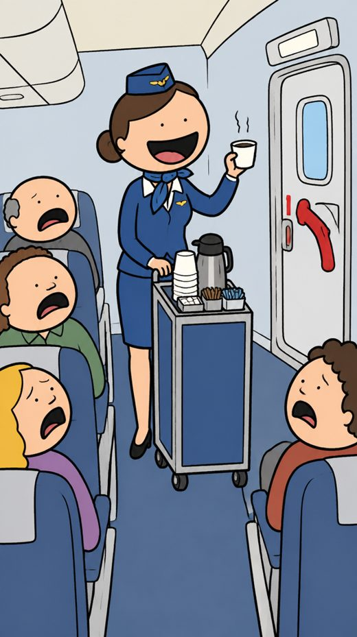

Cooked or Cracked
Make an AI explainer video, properly.
Five steps, one harness: research, script, cut, animate, voice. Tested on one real short, "Misunderstood Jobs: the flight attendant". From a blank page to a 69 second video in about 35 minutes, for about US$2 of credits on top of the two subscriptions.
what is inside
- Set up: connect Higgsfield to Claudep2
- Step 1 · Research a topic people bingep2
- Step 2 · Script, hook in line onep2
- Step 3 · Cut: pick the style, approve nine stillsp2
- Step 4 · Animate only what movesp3
- Step 5 · Voice, one narratorp3
- Stitch, check, postp3
- Worksheet · shot plan and prompt packfile 2
steps5
minutes35
dollars2
By Henry Chua. Built and timed on 28 September 2026. Nothing here is sponsored.
what you need
Claude desktop app, Code tab. Claude Pro, US$20 a month
Higgsfield Starter, from US$19 a month, connected to Claude (page 2)
Gemini free tier, for the final check
No editor. Claude stitches the clips itself
35 minutes and one topic
how it works
Five steps, one harness
Claude is the harness: you type into it, it researches, writes the script, sends every image, motion and voice prompt to Higgsfield through one connector, and joins the clips at the end. Higgsfield makes the pictures (GPT Image 2.5), the motion (Kling 3.0) and the voice (Nadine). Claude shows you each result and waits for your yes before it spends on the next step.
Set up once, five minutes. Install the Claude desktop app (Mac or Windows) and open the Code tab at the top; it is a chat that can also run tools on your computer, and it needs no project folder for this. Settings, Connectors, Add, paste https://mcp.higgsfield.ai/mcp, sign in to Higgsfield when the browser asks. Type "check my Higgsfield balance". A number means you are connected; anything else, open Connectors, click Higgsfield and sign in again. The rest of this guide happens in that one chat. Claude saves takes, stills and clips in a folder named after your topic, and installs ffmpeg itself if it is missing (it asks once).
1
Research
a topic people binge, ten facts with sources
2
Script
hook in line one, nine beats
3
Cut
one style, nine stills approved
4
Animate
one 5 s clip per still
5
Voice
one narrator, one take per beat
1Research a topic people already binge
5 minutes
Pick a job, a place or a story people think they understand. Paste prompt 1 from the worksheet into Claude with your topic. It returns ten checkable facts with a source page each. Keep the ones that would stop a thumb, six to nine, and put each one in the script as a number or a name.
the example Flight attendants. The first one worked on a zeppelin in 1912 and survived the Hindenburg. Airlines hired nurses in 1930. One attendant for every fifty seats. A full plane emptied in ninety seconds with half the doors blocked.
receipt 9 claims in the final script, all 9 marked true by Gemini when it watched the video (prompt 7).
2Script for the ear, hook in line one
5 minutes
Paste prompt 2 with the facts. You get nine beats of four to ten seconds. Line one names the belief people hold, the last line pays it off. Short sentences, one idea each, plain verbs, no hype words. Read it out loud once; where you need a breath, ask Claude to split that line.
beat 1 "You think this job is pouring coffee at thirty-five thousand feet. The coffee is the least important thing on the plane." beat 9 "So the coffee is a bonus."
receipt 9 beats, 62 seconds of speech.
3Cut: pick the style, approve nine stills
8 minutes
Ask Claude to draft the worksheet table from the script: for each beat, one still and one motion. Edit it until every row is a picture you can see. Paste prompt 3 to get five style samples of beat one, pick one, and ask Claude for a 70 word style lock in that style (the real one is on the worksheet). Claude puts the same lock at the front of all nine still prompts (prompt 4); that is what keeps nine pictures looking like one film. Ask for a contact sheet, all nine stills on one page, and say yes or regenerate one still at a time. A wrong still costs cents; a wrong clip costs dollars.
flat vector

comedy cartoonchibi 3D
pulp comic
pickedpaper cut-out
receipt 9 stills, all accepted on the first pass, 2.25 credits, about 7 cents.
4Animate only what moves
8 minutes
One five second clip per still, image to video (prompt 5). Claude picks Kling 3.0 for clips, as it picks GPT Image 2.5 for stills; name a model only if you want another. Write two or three small actions in order, "the trolley rolls one step, the attendant lowers the cup", and ask for a steady camera. Faces and hands drift a little, so keep them small in frame. If nothing needs to move, skip the clip and let Claude give the still a slow push. Check the clips like the stills: one contact sheet, one yes.
you, to Claude, who sends it to Higgsfieldshot 1Image to video from still 1, 5 seconds, steady camera, no zoom. The trolley rolls one step, the attendant lowers the cup and turns to the exit door. Paper cut-out style, nothing else changes.
receipt 9 clips of 5 to 6 seconds, all 9 accepted on the first pass (if Higgsfield suggests a preset, say no and resend). About 56 credits, about US$1.80. This is where the money goes, which is why the stills come first.
5Voice: one narrator, one take per beat
4 minutes
Paste prompt 6. Claude reads beat one in five Higgsfield voices; pick the one you would listen to for a minute (the example uses Nadine). Then one take per beat, so each clip is cut to its own line. Each take sets the length of its beat: at the stitch, Claude slows that beat's clip to fit the take (up to half speed, then a slow push on the last frame).
receipt 9 takes plus 2 retries, about 4 credits, about 13 cents. Gemini rated the voice 7 out of 10, no mispronounced words.
✓
Stitch, check, post
5 minutes
Say "stitch it". Claude writes the ffmpeg commands itself: clip and take joined beat by beat, word captions drawn from the takes, exported 9:16 at 1080 by 1920. For music, drop any quiet track you own into the folder and say "add this under the voice" (the example used a generated bed, 8 cents). Then paste the video into Gemini with prompt 7 and act on what comes back. On the example it asked for the first attendant's name: line 3 got "Heinrich Kubis", one new take, one rebuild.
Stills 3, 6 and 7: one style lock in every prompt is why they match.
receipt 69 seconds, nine shots, 35 minutes end to end, 63 Higgsfield credits: about US$2 on the Ultimate plan (about 31 credits per dollar; Starter pays more per credit). Shot plan and prompts: worksheet file.
Who this is for, and the smallest version
use this if
You have a topic and 35 minutes, and you want a short with every fact checked, a steady camera on every shot, one voice and one look. Same process for a product, a place or a history story.
short on time
Do steps 1, 2, 3 and 5 and skip animate: nine stills with a slow push, one voice. About 20 minutes and under 30 cents. For scale, the one prompt tool tested in the episode (OpenMontage) took 87 minutes on the same topic and chose a robot voice.
about the numbers in this guide
Prices, credits and plan details were checked on 28 September 2026 on higgsfield.ai/pricing and claude.com/pricing. Higgsfield and Anthropic change pricing, credit rates, promotions and terms at their own discretion, sometimes weekly. Treat every figure here as a snapshot on that date, not a quote, and confirm on the linked page before you pay. I am not affiliated with either company and I do not earn from these links.
If something here has changed by the time you read it, tell me in the comments and I will update the file. Henry Chua.